בנין הכנסת אורחים גדול ומפואר בצל ציון רשכבה״ג היהודי הקדוש ורבי שמחה בונים מפשיסחה זי״ע: מקווה טהרה מהודר, בית מדרש, חדרי לינה, סעודות כיד המלך ושבתות מרוממות — לכל יהודי באשר הוא.
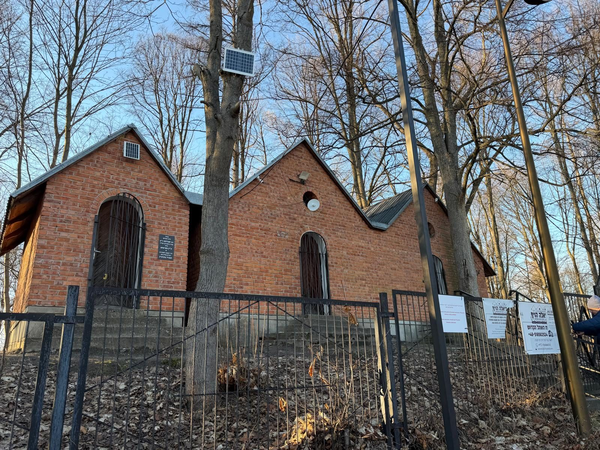
האוהל הקדוש על ציון היהודי הקדוש ורבי שמחה בונים זי״ע — מקום שרבים נושעו בו בכל הישועות.
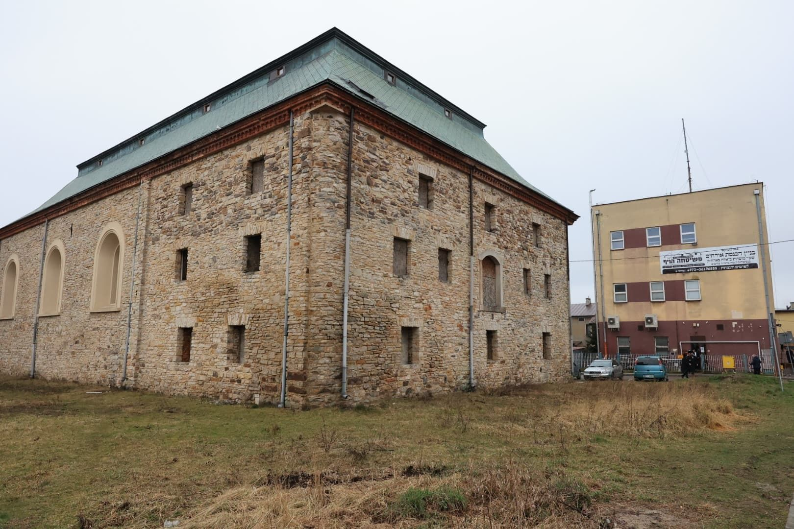
בית הכנסת העתיק שבו התפללו רבותינו — וקדושתו חוזרת וננערת: השיפוץ החל.
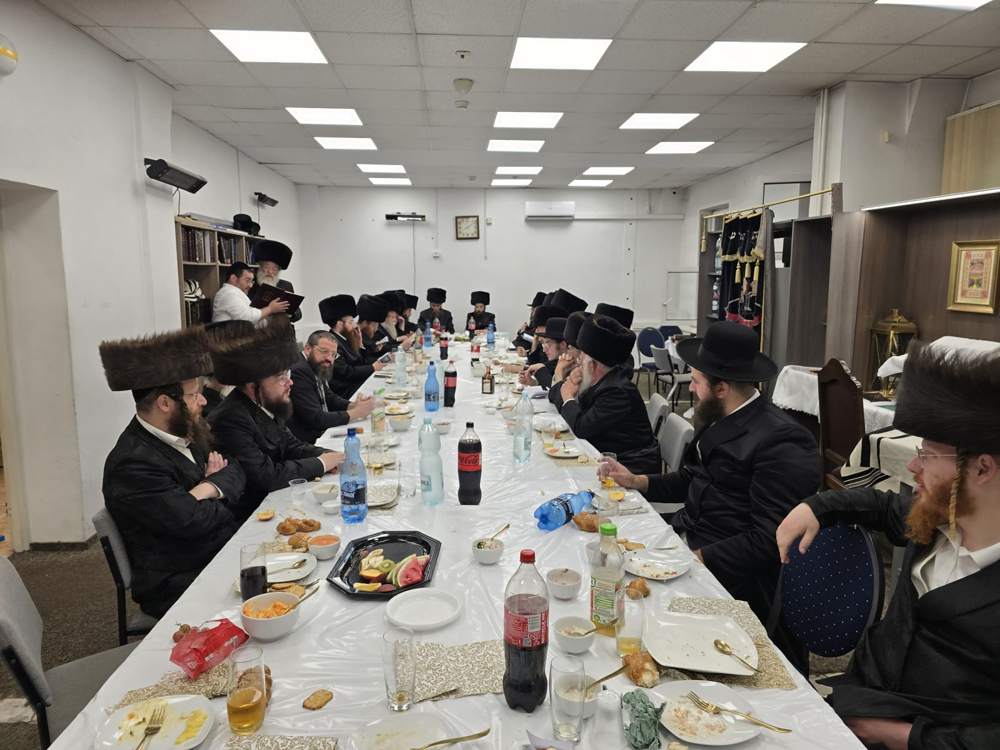
בית של תורה וחסד: מקווה, בית מדרש, חדרי לינה ומקום להתוועד יחד בסעודה כיד המלך.
הספירה לאחור לימי ההילולא בפשיסחה
הסדר שבו עוברים הבאים להויף, כפי שמתאר אותו גבאי המקום.
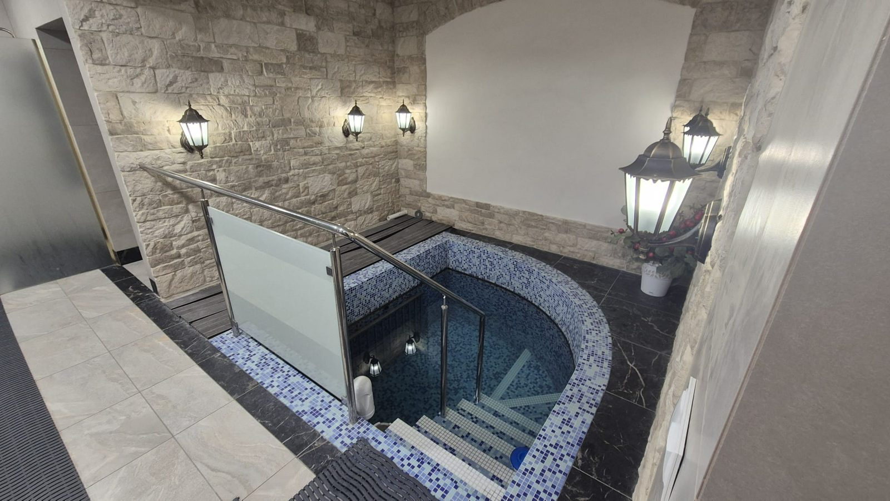
תחילה יורדים לטבול במקווה המהודר שבבניין, להיטהר מאורח הדרך.
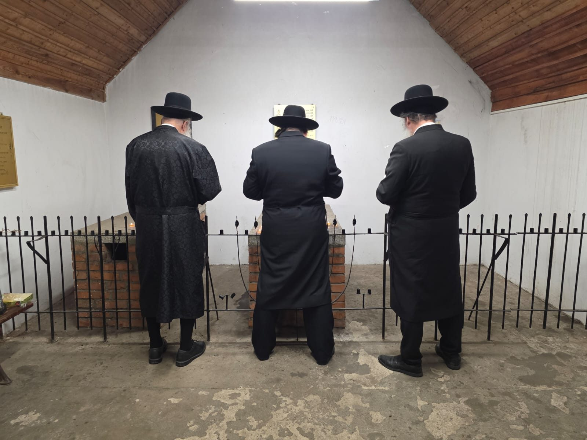
משם עולים לציונים הקדושים לשפוך צקון לחש — ולהזכיר את השמות.
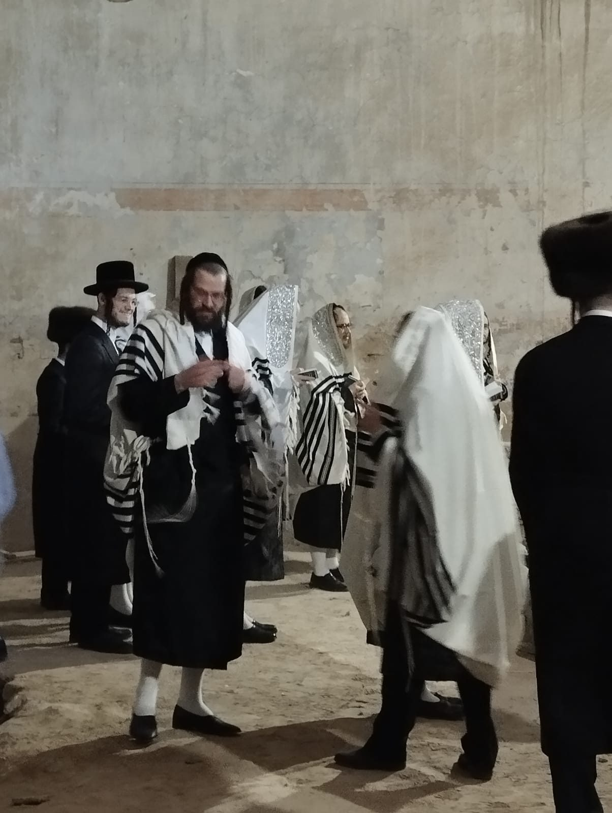
נכנסים להתפלל במקום שהתפללו אבותינו ורבותינו.
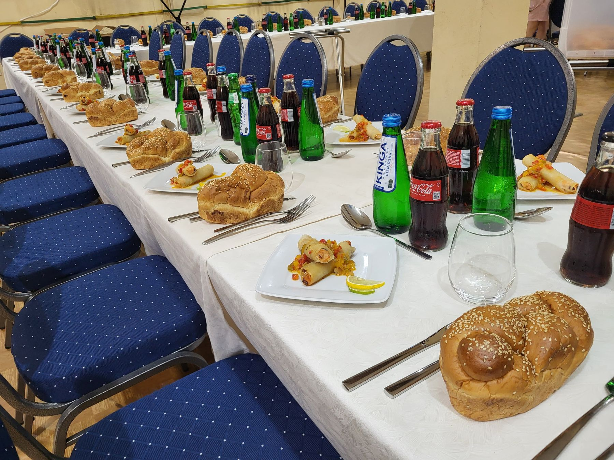
לפוש קמעא מחולשא דאורחא — ולמלא את הנפש בסעודה ובמנוחה.
״בית של תורה וחסד, בית המדרש לתורה ולתפילה, מקווה טהרה מפואר ובכשרות הגבוהה ביותר, ומקום מיוחד להתוועד יחדיו בסעודה כיד המלך״ — כהכנה לעלייה לציון.
מקווה מפואר ברוב פאר והדר בבניין הכנסת האורחים, עם חדר הכנה מרווח.
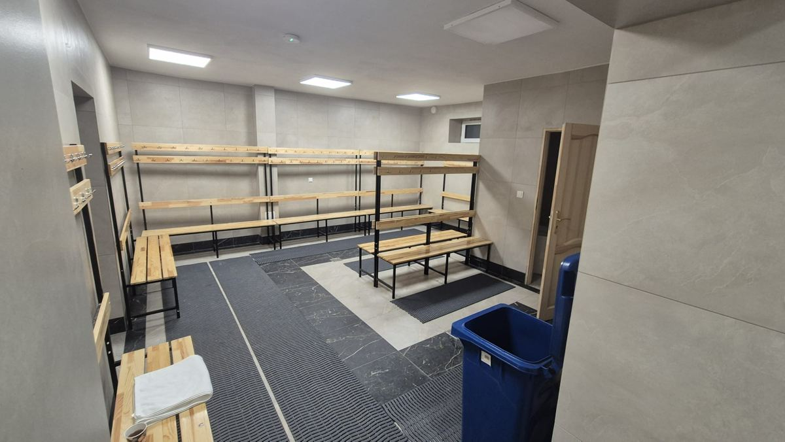
חדר הכנהנקי, מואר ומאובזר.
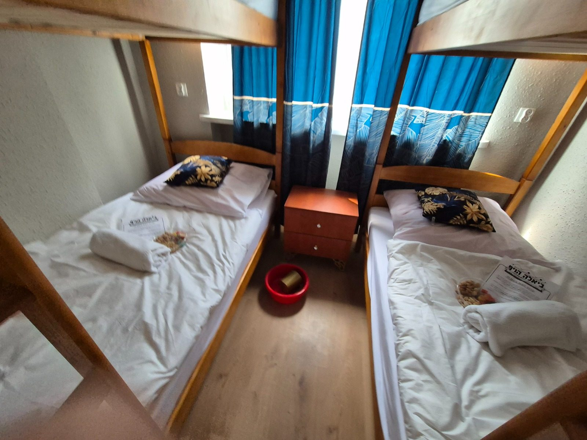
חדרי לינהחדרים מעוצבים עם מיטות עץ, וילונות, מגבות ומצעים נקיים — מוכנים לכל אורח.
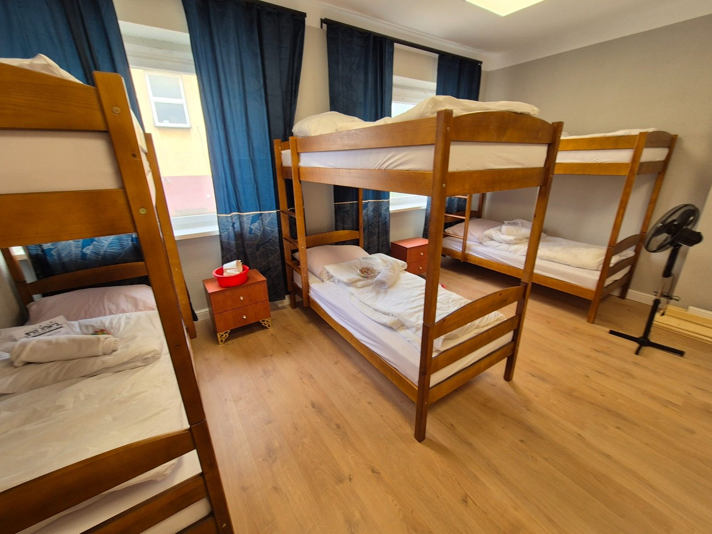
משפחות וקבוצותחדרים מרווחים עם מיטות עץ קומתיים — לחבורות, לקהילות ולמשפחות.
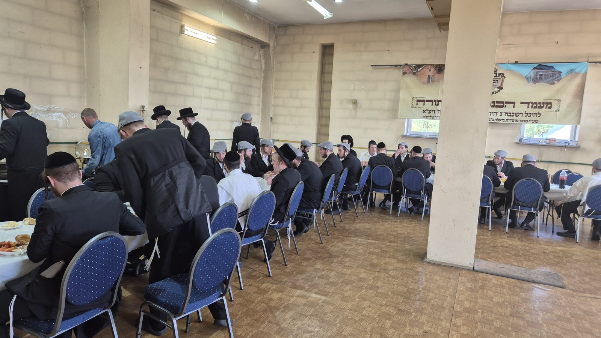
סעודות כיד המלךאולם גדול ערוך בשולחנות מפוארים — לשבתות, להילולות ולקבוצות מאורגנות.
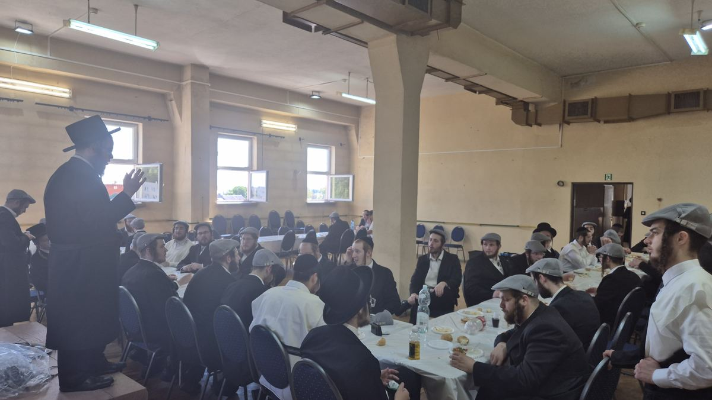
תפילות יומיותתפילות במניין ולימוד בהיכל בית המדרש שבבניין.
שולחנות ערוכים, חלות חמות, תפילות בהתעוררות ושולחן טהור — הקבוצות מתקבלות בכבוד מלכים כמיטב המסורת של ״דער ביאלער הויף״.
לינה, סעודות שבת, מקווה בערב שבת ותפילות בבית המדרש. קבוצות וחבורות מוזמנות לתאם מראש — המקום מוגבל.
לתיאום שבת ←האגודה ׳דער ביאלה הויף׳ נוסדה ע״י כ״ק מרן אדמו״ר מביאלה שליט״א, נצר לבית פשיסחה, לפעילות אינטנסיבית למען הציון הקדוש ולקדשי בית פשיסחה.
ספר תורה בציון בעת צרהמנהג קודש של רבינו בעל ה׳להבת דוד׳ זי״ע, ובנו כ״ק מרן אדמו״ר שליט״א נוהג אחת בשנה לעלות ולהעתיר בציון עם מניין וספר תורה בחיקו, לביטול גזירות מעל כלל ישראל.
הכנסת ספר תורה להויףמעמד כתיבת אותיות וסיום ספר תורה שנכנס ברוב פאר להיכל ׳דער ביאלה הויף׳, בתהלוכת לפידים ברחובות פשיסחה.
המסע השנתיהנסיעה השנתית לפשיסחה חודשה ע״י רבינו בעל ה׳להבת דוד׳ מביאלה זי״ע, וממשיכה עד היום.
מתוך גיליונות ״מהנעשה בהיכל ההויף״ וספרי בית פשיסחה. לחצו על סיפור לקריאה מלאה.
תהלוכת הלפידים — הכנסת ספר תורה, אדר תשפ״ה
החופה ברחובות פשיסחה
גוללים הצידה ←
העיירה שבה הודלקה הלהבה — ושבה נכרתה קהילה שלמה. ואף על פי כן: הלהבה לא כבתה.
ערב מלחמת העולם השנייה עמדו בראש הקהילה ר׳ יוסף מייזלס, ורב העיר היה הרב אלחנן פוקס. בשנת 1942 הקימו הגרמנים בעיר גטו, ורוכזו בו יהודי פשיסחה ויהודים מהעיירות הסמוכות — אלפי נפשות בצפיפות נוראה.
בחודש חשוון תש״ג (27–31 באוקטובר 1942) חוסל הגטו: הגרמנים כיתרו את הרובע וציוו על כולם להתייצב בנקודות האיסוף. מי שנשאר בביתו נורה במקום. השאר הובלו ברגל ובעגלות לאופוצ׳נו, ומשם בקרונות אל מחנה ההשמדה טרבלינקה.
חברי היודנראט ויהודים שנורו בחצר בית הקהילה נקברו בקברי אחים בבית הקברות היהודי — אותו בית קברות שבו נמצא ציון היהודי הקדוש. לאחר המלחמה לא חודשה הקהילה היהודית בפשיסחה, והבית הקדוש עמד בשממונו עשרות שנים.
פשיסחה נמצאת בלב מסלול הציונים. לחצו על נקודה במפה או על כרטיס — ותקבלו ניווט ישיר מההויף.
המרחקים וזמני הנסיעה משוערים (ברכב, בתנאי דרך רגילים). לזמן מדויק — לחצו ״ניווט״.
בית הכנסת העתיק בפשיסחה, שאלפי חסידים ואנשי מעשה באו להתפלל בתוכו — אחרי עשרות שנות שממה החלה מלאכת הקודש של שיפוצו מחדש.
טלו חלק בשיקום ←חישוב אוטומטי לפי מיקום פשיסחה ושעון פולין — לתכנון בלבד. לזמני הלכה למעשה יש לעיין בלוח מוסמך.
ממלאים — וצוות ההויף חוזר אליכם לתיאום.
חדרים בבניין הכנסת האורחים, סעודות ומקווה — סמוך ונראה לאוהל הקדוש.
סעודות שבת, תפילות ולינה בצל הקודש.
השמות יוזכרו בתפילה על ציון היהודי הקדוש ורבי שמחה בונים זי״ע.
זכו במצוות הכנסת אורחים מרחוק: ממנים סעודה או שבת לאורחי רבינו בפשיסחה.
״אל כלל ידידי בית רבינו הקדוש — לאחר מאמצים מרובים והוצאות תרתי משמע, צלח בידנו לסדר לכלל העולים מתוך נוחיות המרבית... והיות וכידוע הוצאות מרובות מאד, באנו בבקשה: טלו חלק ונחלה להחיות נפש כל חי — ברווח ובכשרות בתוך השממה הפולנית, למען אלפי העולים.״
״רבינו הק׳ זיע״א לא נשאר חייב לאלו אשר יפעלו לשמו ולזכרו!״
פשיסחה (Przysucha) שוכנת כ־100 ק״מ דרומית לוורשה — כשעה וחצי נסיעה משדה התעופה. ההויף נמצא במרכז העיר, סמוך לבית הכנסת המיוחס ולבית החיים.
פשיסחה היא תחנה מרכזית בדרך לציונים נוספים — ראדושיץ, ראדומסק, לעלוב, לובלין, קוזניץ, גור ועוד.
למפת הציונים וזמני הנסיעה ←בנין הכנסת האורחים משרת את העולים לציון במהלך השנה, ובמיוחד בשבתות, בימי בין הזמנים ובימי ההילולא. מומלץ לתאם מראש.
בהחלט — קבוצות, חצרות וקהילות מתקבלות בכבוד. תאמו מראש כדי שנוכל להיערך לסעודות וללינה.
בטופס ״שמות לציון״ באתר, או דרך גבאי האגודה בטלפון.
בלחיצה על כפתור ״תרומה״ באתר — דרך מערכת קהילות (קוד קופה 64553), בקו הצדקה 073-275-7000, בטלפון +972-3-619-6555 שלוחה 6, או במייל taferet2021@gmail.com.
לתיאום ביקור, לינה, שבתות, קבוצות, שמות לציון ותרומות — צוות ׳דער ביאלה הויף׳ לשירותכם.